シャープが手がけるロングセラー「BIG PAD」。品質管理やサポート体制を重視する学校・自治体の調達でも選ばれやすい、信頼のブランドです。
Kokuban BASE 取り扱いブランド
シャープ株式会社｜BIG PADシリーズ
日本の最大手が誇る、信頼性の高いロングセラーブランド。
日本の最大手が誇るロングセラーブランド「BIG PAD」は、会議室や教育現場など幅広い場所で知られている電子黒板シリーズです。国内メーカーならではの安心感、見やすい表示、法人・学校で使う機器としての堅実さを重視したい場合に比較しやすい選択肢です。既存のICT機器との相性や、長期利用を前提にした運用を考える教育機関にも向いています。
65型75型86型
- 国内最大手シャープ株式会社の電子黒板
- ロングセラー教育現場・会議室で豊富な実績
SHARP BIG PADの3つの特長
照明や日差しの入る教室でも文字がはっきり読める、実績あるディスプレイ技術。後方の席からの見やすさを重視する現場に向いています。
既存のICT機器と組み合わせやすく、長期利用を前提にした堅実な運用が可能。導入後の入れ替えや拡張の計画も立てやすい1台です。
Kokuban BASEスタッフより
Kokuban BASE 選定サポートチーム
「国産メーカーの安心感を重視したい」というご要望で、最も多くお名前が挙がるのがBIG PADです。表示の見やすさと堅実なつくりで、長期でじっくり使いたい学校・塾との相性が良く、既存の校内機器との組み合わせもご提案しやすいブランドです。
標準搭載機能・スペック
標準搭載機能
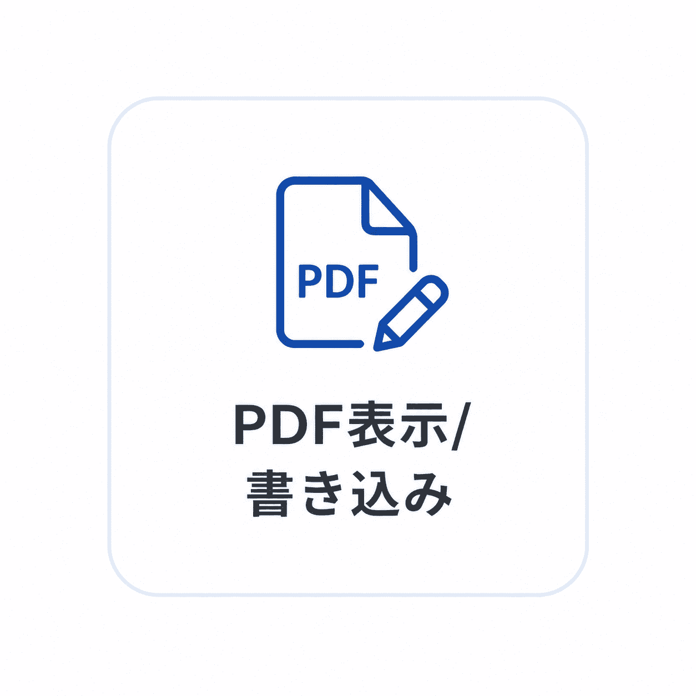
PDF表示・書き込み〇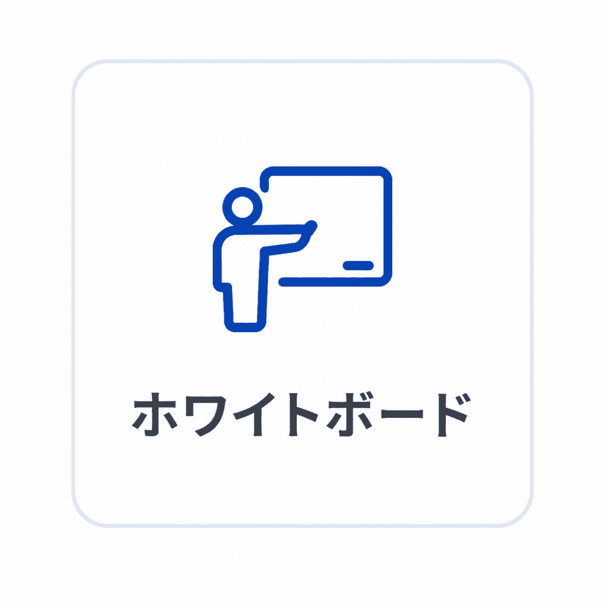
ホワイトボード〇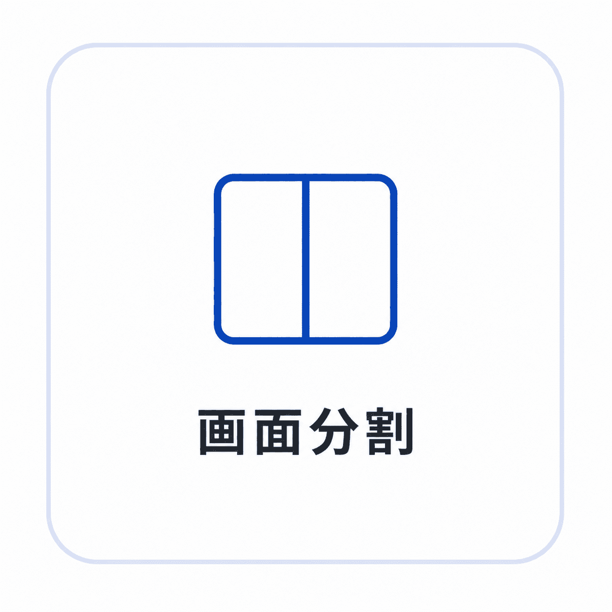
画面分割〇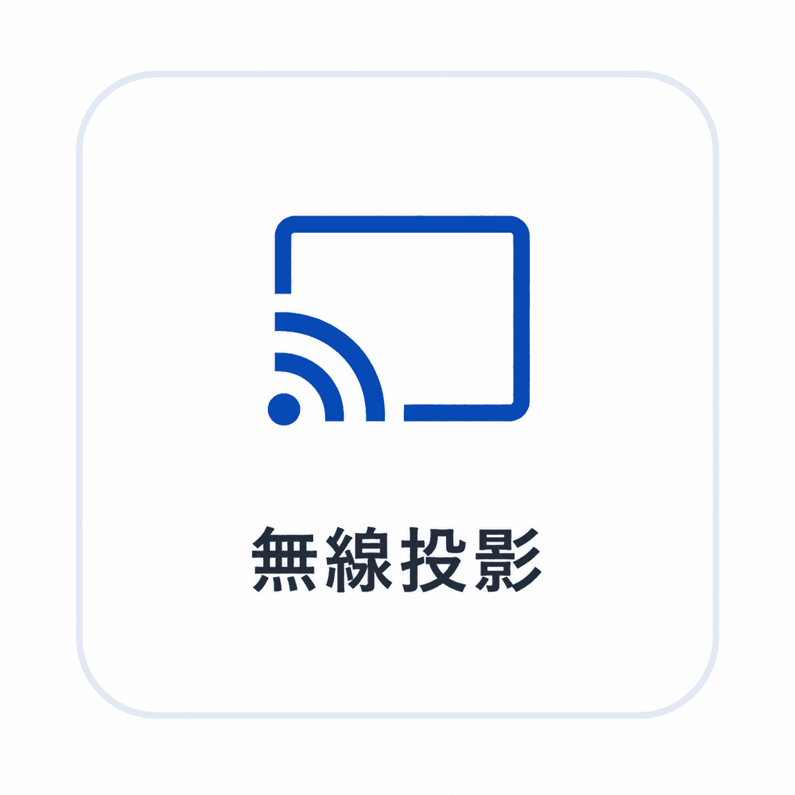
無線投影〇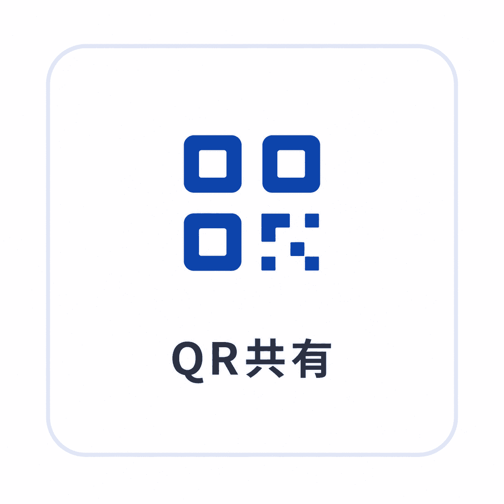
QR共有〇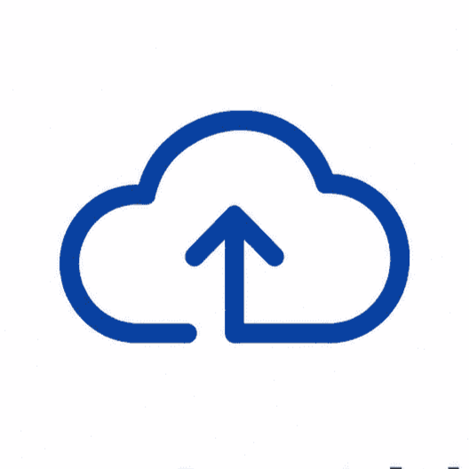
クラウド連携〇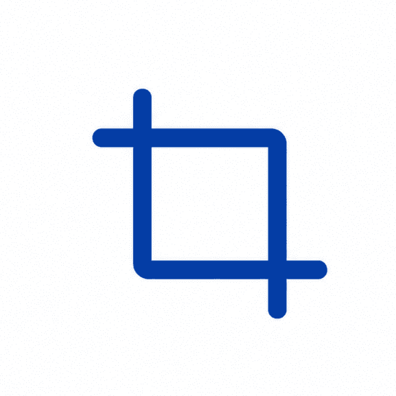
スクリーンショット〇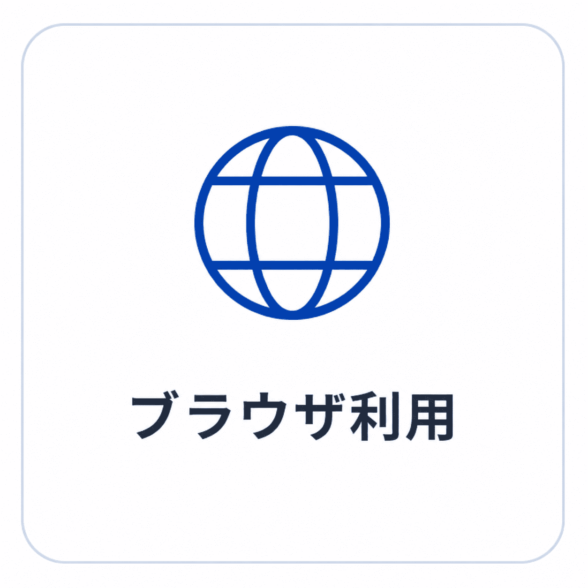
ブラウザ利用〇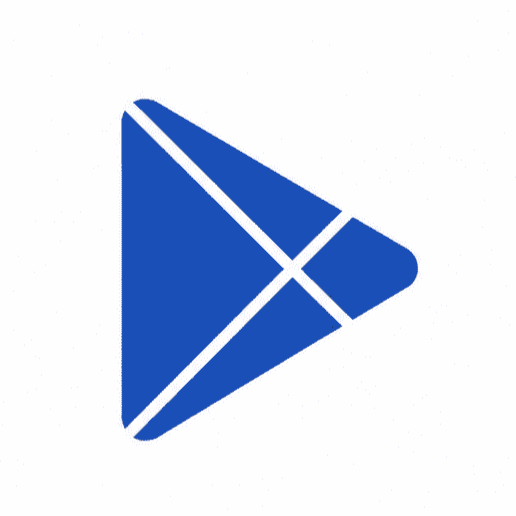
Google Play〇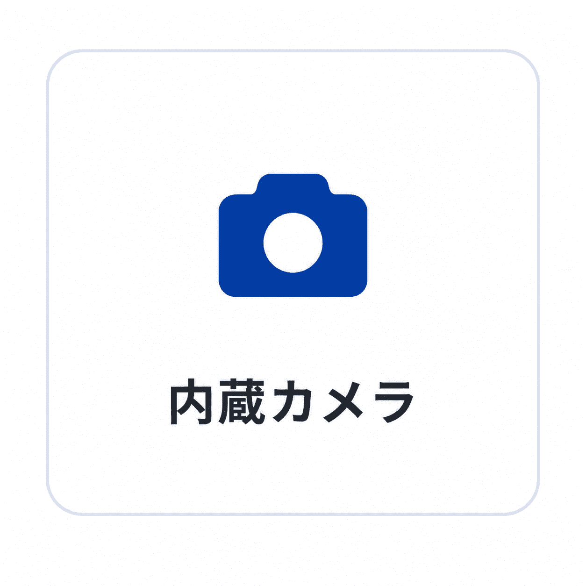
内蔵カメラ×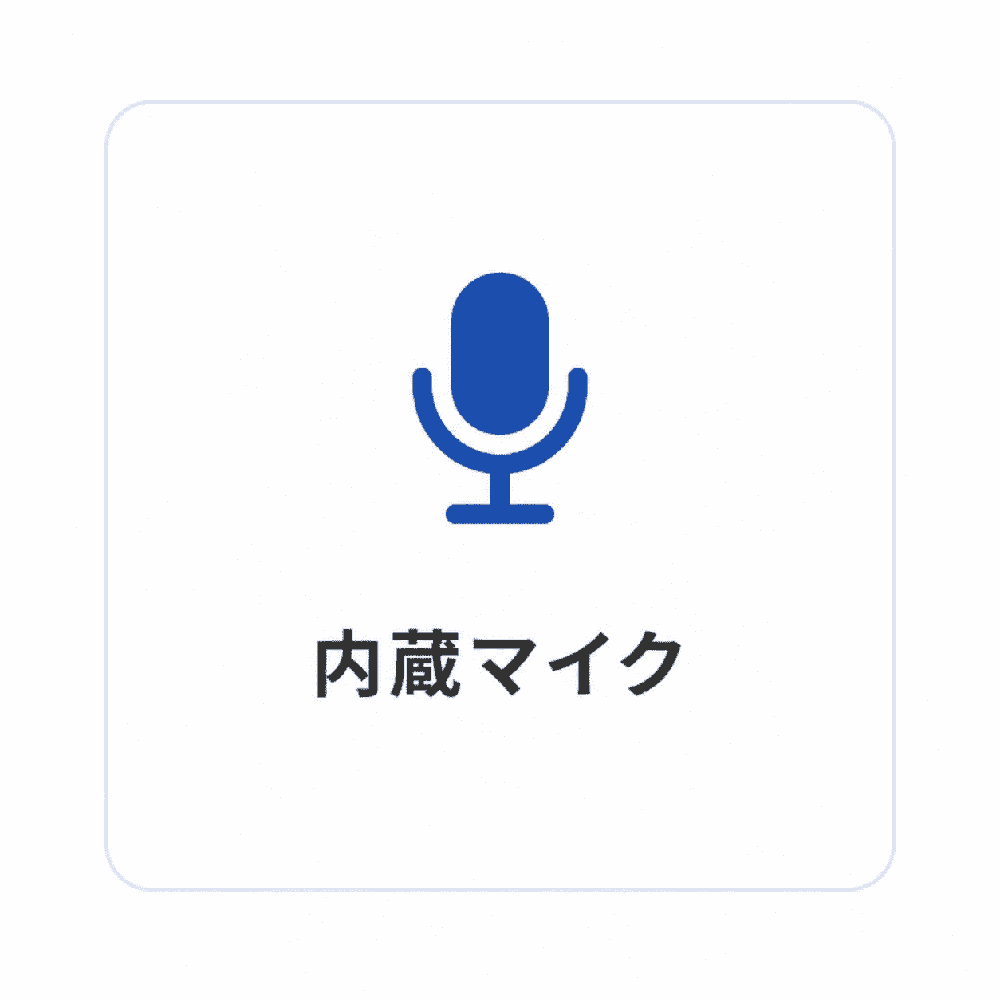
内蔵マイク〇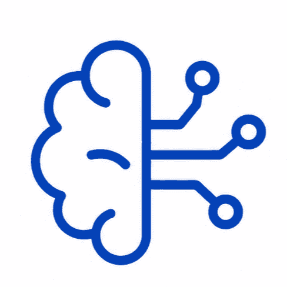
AI活用〇
カタログスペック
OS・メモリ・CPUなどの詳細スペックは、モデル・サイズにより異なります。ご検討中の教室環境・用途に合わせて、最新の仕様書とお見積りをお送りします。
仕様書を問い合わせる ›
ギャラリー
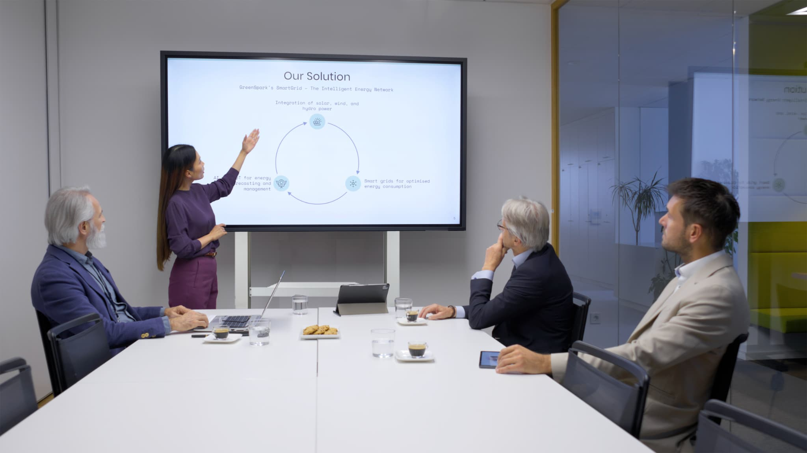
記事でもっと知る
.png?w=640)
.png?w=640)
サイズの目安
65型推奨人数：15名まで
75型16〜30名：75型以上
86型30名以上：86型以上
SHARP BIG PADを、実際に見て・触れて確かめませんか？
ショールームやオンラインで、実機の書き心地や操作感をご案内します。ご予算・教室に合わせたお見積りも無料です。